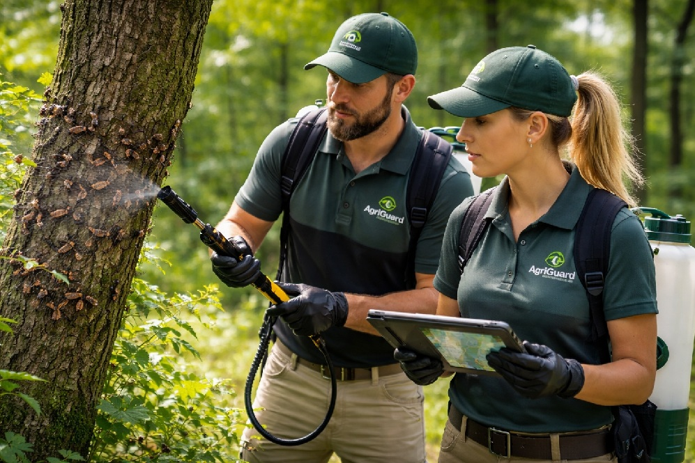
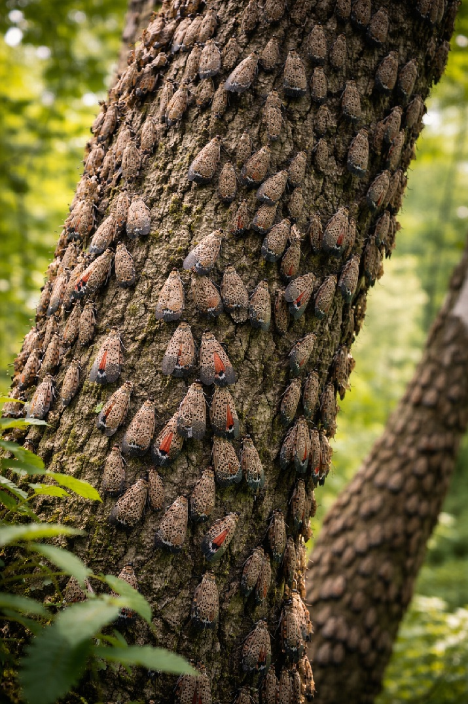

Protecting Properties, Agriculture, and Communities from Spotted Lanternfly Threats
AgriGuard is being built to deliver modern spotted lanternfly monitoring, maintenance, containment, and eradication support for private properties, commercial sites, agricultural operations, and future government partnerships.
Private
Residential and commercial protection plans
Public
Built with future municipal and government work in mind
Modern
Education, response strategy, and scalable service rollout

Field-Ready Protection
AgriGuard is building practical, modern solutions for monitoring, containment, and long-term spotted lanternfly control.
Core Service Areas
AgriGuard is structured around prevention, monitoring, rapid response, and long-term maintenance strategies for spotted lanternfly pressure across public and private environments.
Inspection & Monitoring
Site reviews, risk checks, visual monitoring, hotspot identification, and recurring surveillance plans for properties and facilities.
Containment & Maintenance
Ongoing property maintenance strategies to reduce spread, support control efforts, and help clients stay ahead of future infestation cycles.
Private & Government Solutions
Flexible service pathways being designed for homeowners, farms, businesses, municipalities, and future contract-based response work.

Built in the Early Phase. Designed for Serious Scale.
AgriGuard is currently in its early build phase, with a focus on creating a strong, modern, trustworthy brand capable of serving both private clients and larger public-sector opportunities.
- Mobile-friendly digital presence from day one
- Service structure for residential, commercial, and agricultural needs
- Future-ready positioning for bids, partnerships, and contract growth
- Modern branding and education-based public trust strategy
Why AgriGuard
The goal is not just reacting to infestations, but building a professional response system around awareness, prevention, and sustained control.
Professional Image
A clean, serious, modern front that helps establish credibility with private clients, partners, and future public-sector opportunities.
Scalable Direction
Structured to start small while leaving room to grow into larger service zones, recurring service contracts, and operational expansion.
Focused Mission
A specialized approach centered on the spotted lanternfly threat and the need for direct action, education, and long-term maintenance.
How It Works
A straightforward process for future clients, property owners, and contract opportunities.
Inquiry
Client or agency reaches out with property details, infestation concerns, or service interest.
Assessment
Initial site review, threat evaluation, and identification of pressure areas or treatment needs.
Strategy
A practical service plan is proposed based on site size, urgency, and recurring maintenance needs.
Ongoing Support
Follow-up service, monitoring, seasonal maintenance, and long-term prevention planning.
Building Now. Preparing for Impact.
AgriGuard is currently being developed. If you are interested in future private service, commercial support, agricultural protection, or public-sector partnership opportunities, this is where the next phase begins.
Contact AgriGuard